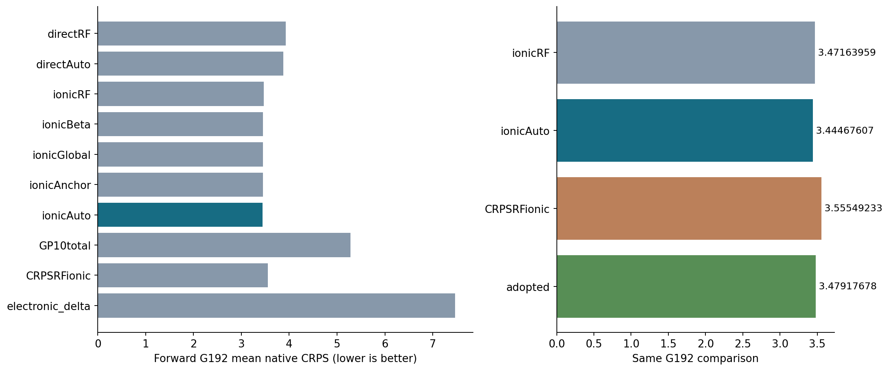
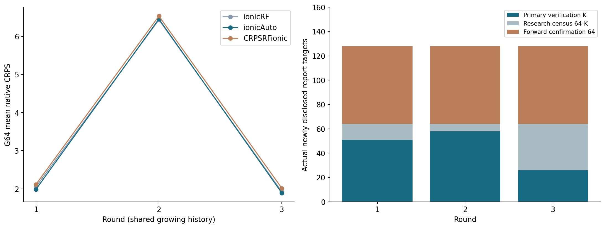
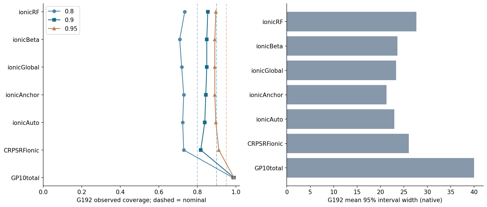

G192：冻结采用策略CRPS3.479176775，离子RF3.471639594，差+0.007537181。原始ionicAuto为3.444676068、独立CRPS森林3.555492327；原始修正的正结果不替代采用策略的负结果。
| 方法 | G192平均CRPS↓ | G192中位数RMSE↓ | G192的95%覆盖 |
|---|---|---|---|
| directRF | 3.925036675 | 20.221561448 | 92.188% |
| directAuto | 3.878366461 | 20.126689008 | 91.146% |
| ionicRF | 3.471639594 | 17.854332457 | 89.583% |
| ionicBeta | 3.450144781 | 17.901961848 | 89.062% |
| ionicGlobal | 3.451312274 | 17.908855555 | 89.062% |
| ionicAnchor | 3.448679504 | 17.899953241 | 89.062% |
| ionicAuto | 3.444676068 | 17.906621724 | 89.583% |
| GP10total | 5.277102771 | 23.931928727 | 98.958% |
| CRPSRFionic | 3.555492327 | 17.938696592 | 91.146% |
| electronic_delta | 7.464895833 | 19.686988009 | 0.521% |

S192用于采用决策，只有G192作为前向确认。三轮共享增长历史，不是三个独立campaign；点均值排名不等于正式显著性、非劣性或SOTA认证。
总响应=已知电子贡献+模型化残差；完整残差RF参考CDF叠加固定低维概率修正，预测保持精确仿射表示。成熟构件有直接先例，当前贡献限定为材料参考适配和可核查证据。S整池损失差证书不保证未查询子集或未来G，后续研究另行封存。

135主验证+57科研核验+192前向确认=384真实目标；17模型训练与15校准拟合任务分别计账，没有实测湿实验或DFT节约。

全部RMSE/覆盖/宽度均保留；平均CRPS较好不意味着每指标获胜。
本Git子集省略原始数据、材料身份、单案例结果、法则/完整状态与私有日志；完整109.7MB本地资源独立保留。原水凝胶MLST独立。